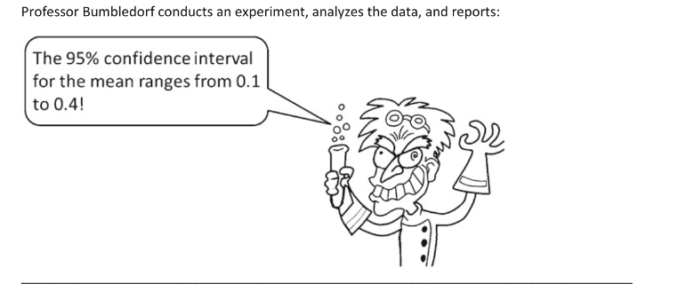

Interpretation of confidence intervals
Contents
Interpretation of confidence intervals¶
List your answers to the following true/false questions.


Confidence interval calculation¶
For this problem, avoid using scipy.stats or any statistical functions. Feel free to use Python as a calculator.
A set of 100 anchovy weight samples has a mean value of 13.95 g and a standard deviation of 9.52 g.
a. Calculate the standard error.
b. Calculate 95% confidence intervals for the mean.
Comparing respiration rates¶
For the problem below, use any function in scipy.stats or other libraries such as Pinguoin.
Water column respiration rates are measured in dark bottle incubations at two different stations on an oceanographic cruise. Three replicates are taken at each station. The values (in units of mL/L d\(^{-1}\)) are given below:
Station A: [0.45, 0.77, 0.71]
Station B: [0.54, 0.43, 0.36]
Use an appropriate statistical test to determine whether there is a significant difference in the mean respiration rate between the two stations.
Power analysis and experimental design (if time)¶
You are studying the effects of a marine reserve on juvenile rockfish. Previous literature indicates that the juveniles of the species you are studying have a standard length of 70 +/- 30 mm (mean +/- standard deviation). The marine reserve will allow you to catch and release 20 fish for scientific purposes, and you plan on measuring the same number of fish outside the reserve for comparison.
If your target power is 80% and your confidence level is 95%, what is the minimum difference in mean length you can expect to observe in the marine reserve? You can assume that the fish lengths are normally distributed.
What is the probability of not observing a significant effect of this magnitude if there actually is one?
from statsmodels.stats import power
help(power.tt_solve_power)
For loop - cumulative sum 1¶
Write a for loop that prints out the cumulative sum of an array. For example, the cumulative sum of the array
[1,3,6,4,7]
would be:
[1,4,10,14,21]
Write out your algorithm first, and use the following code as a template (replace the dashes —– with code).
x = [1,3,6,4,7]
cumsum = 0
for val in x:
cumsum = -------
print(cumsum)
For loop - cumulative sum 2¶
Write a for loop that stores the cumulative sum of an array in another array. Use the np.append() function - see help(np.append) - and make sure that you have run import numpy as np at the top of your program in order to use this function.
x = [1,3,6,4,7]
cumsum = 0
cumsum_array = []
for val in x:
cumsum = -------
cumsum_array = np.append(------,--------)
print(cumsum_array)
Fibonacci sequence (if time)¶
Write a for loop that prints the first n numbers of the Fibonacci sequence: 1,1,2,3,5,8,13… Write out your algorithm first, and start with the following minimal code.
n = 10
# insert code here
Python function - temperature conversion¶
Create a function that converts temperature from degrees Celsius to degrees Fahrenheit.
Use the function created above to convert the following array of temperature values from degrees F to degrees C. Avoid using a for loop.
temps_f = np.array([50.5, 58.4, 62.3, 49.2])
Stokes law function¶
Stokes’ law predicts the settling velocity (or “terminal velocity”) of a sinking sphere, \(v\) (units: m/s). The theoretical velocity is based on the radius of the particle, \(r\) (units: m), the density of the particle \(\rho_p\) (units: kg/m\(^3\)), the density of the ambient fluid \(\rho_f\), the dynamic viscosity of the ambient fluid \(\mu\) (units: kg/(m*s)), and the acceleration due to gravity \(g\) (units: m/s\(^2\)):
Use the following template to create a function that calculates the velocity predicted by Stokes law:
def stokes_law(r,rho_p,rho_f,mu,g):
# insert code here
return v
Use your stokes_law function to estimate the settling velocity of the single-cell alga Phaeocystis globosa, assuming it is spherical. The radius of a typical cell is 46 \(\mu m\) and the typical cell density is 1091 kg/m\(^3\). For standard seawater conditions (temperature = 10 deg C, practical salinity = 35) \(\rho_f\) = 1025 kg/m\(^3\), \(\mu =\) 1.51 × 10\(^{−3}\) kg/(m*s).
Source: L. Peperzak, F. Colijn, R. Koeman, W. W. C. Gieskes, J. C. A. Joordens, Phytoplankton sinking rates in the Rhine region of freshwater influence, Journal of Plankton Research, Volume 25, Issue 4, April 2003, Pages 365–383, https://doi.org/10.1093/plankt/25.4.365
Edit your function to use typical seawater values as defaults for
rho_fandmu.